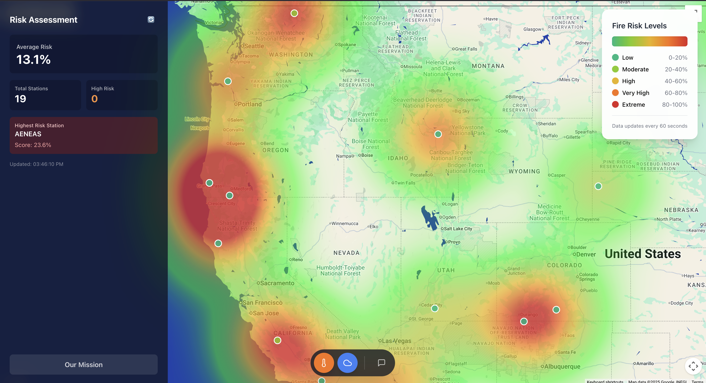
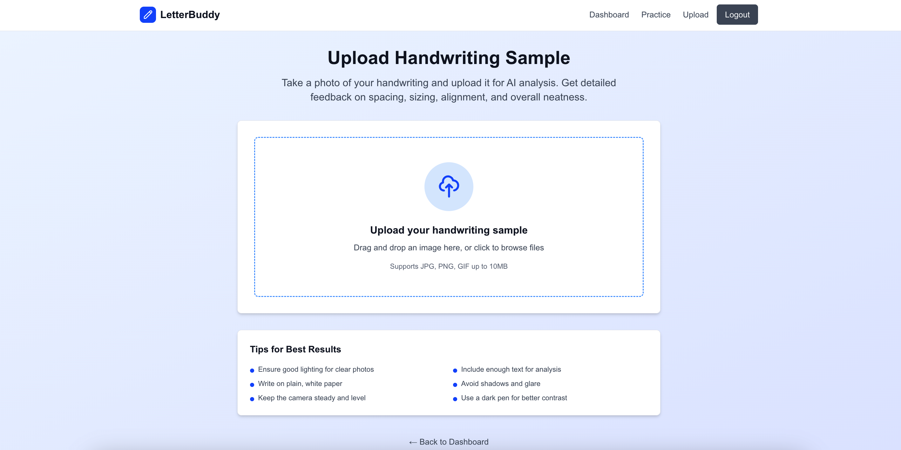
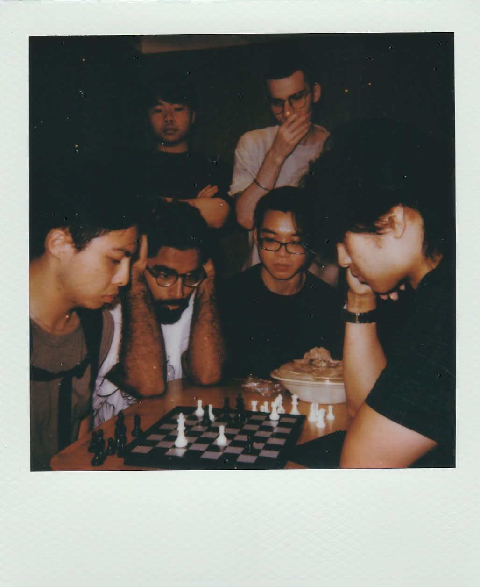

BYTE HACKS · 1ST PLACE
Respira
A wildfire smoke tracker that helps people understand where smoke may travel and protect their health.
I am a computer science student who loves turning ambitious ideas into useful tools and software anyone can use.
I’m in my senior year at the City College of New York.
My areas of focus are backend development and machine learning.
Most recently, I've been learning how to incorporate agents in my workflows in a smart manner. I'm currently learning prompt engineering, utilizing agent skills and rules (like Ponytail, test driven dev), and context management.
I also code by hand still! I believe a lot of what we tell agents to do still requires a significant amount of foundational and specialized knowledge, and I'm working on growing this knowledge everyday.
Although the design of this website was made with an agent, I can promise the text you're currently reading is written by myself...
Outside of school, I love attending hackathons and tech events in the city. Outside of tech, I really enjoy solving puzzles like Wordle, Connections, and chess (don't ask about my elo)!
A few things I’ve been building lately.

A wildfire smoke tracker that helps people understand where smoke may travel and protect their health.

An AI powered handwriting practice app that gives young adults feedback on spacing and alignment.

A crowd sourced restroom finder for dense metropolitan areas, with live location updates.
Opportunities that have helped me grow professionally and technologically.
Manage finances for the biggest computer science club on campus
Built an anomaly detection pipeline for time series network traffic data.
Created LLM agent workflows with real estate and engineering partners.
Led small group sessions solving data structures and algorithm problems.
Built payment features for a community platform.
A few snapshots from campus, community, and beyond.


